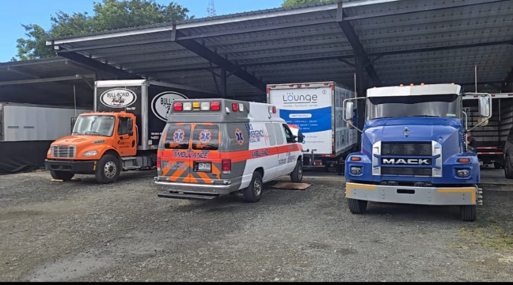

En JA Technician contamos con más de 30 años de experiencia, nuestro equipo experto se especializa en restauración integral, mejoras de motor, fabricación personalizada y mantenimiento preventivo. Combinamos la artesanía tradicional con tecnología moderna para ofrecer calidad y rendimiento incomparables. Nuestra misión es devolver la vida a tu auto clásico muscle con precisión, cuidado y atención al detalle. Ya sea que busques restaurar una joya vintage o mejorar el rendimiento de tu vehículo, JA Diesel Technician LLC es tu aliado de confianza.
